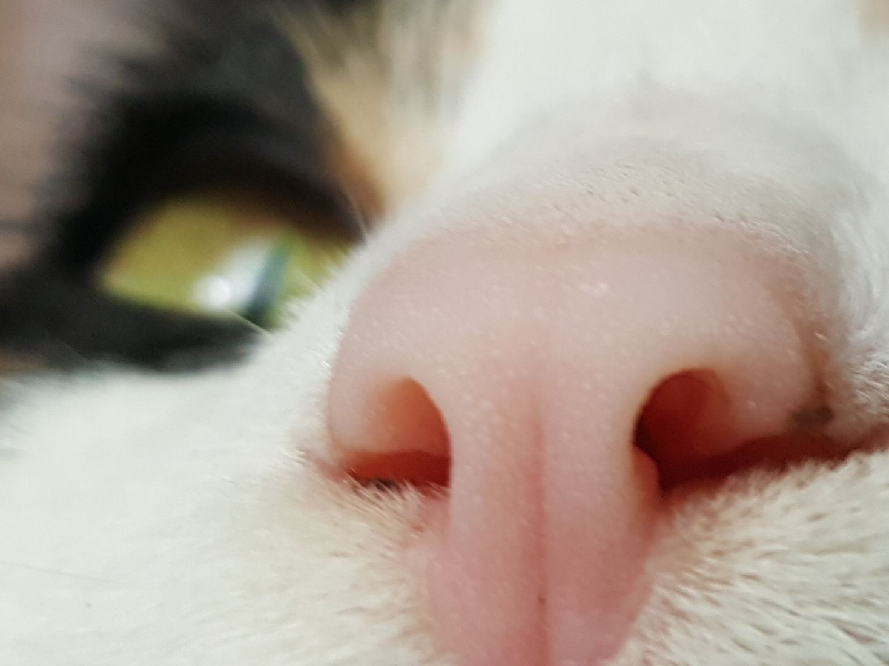
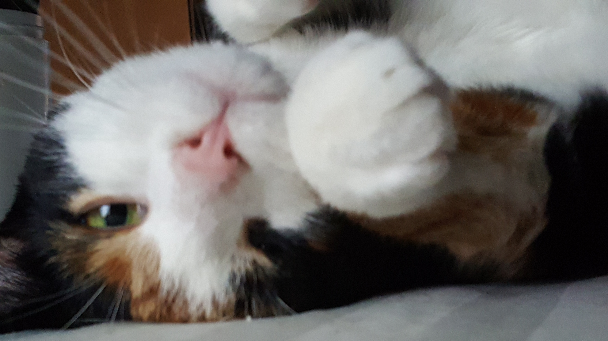

Welcome to J's site, not much to look at quite yet!
About me:
- Amateur radio callsign VA3PRR
- Holder of Canadian Basic Qualification with Honours
- I love cats (see my callsign)
- Raspberry Pi, Arduino, and AVR microcontroller enthusiast


Welcome to J's site, not much to look at quite yet!
About me: